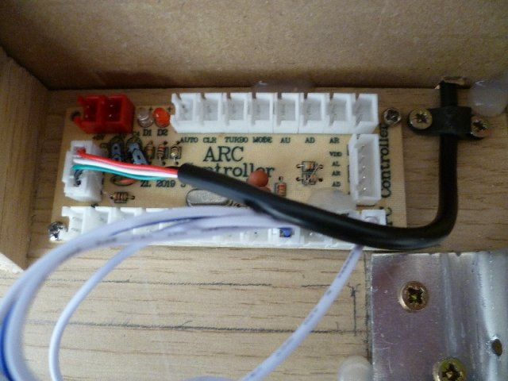
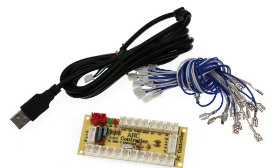

Low cost DIY Turn/Direction indicator stalk for ETS2
First created 12 June 2025.
Rather than using the paddle shifters on my G29 wheel, I looked into adding a Turn indicator stalk to my setup for as little money as possible. I found when I returned to driving my real fully automatic car, I often tried to use the optional paddle gear shifters to operate the turn indicators....
I found a seller on AliExpress offering a low cost toggle switch with a longer than normal metal lever. The switch is momentary toggle switch. ie. It springs back to centre position when 'Off'.
I had a simple pedestal fixed to the desk, made from offcuts of laminate flooring and furniture board for my keyboard which sits on top of the G29 wheel base, so this made it straightforward to add the Turn indicator stalk. It is within convenient reach using my fingers without taking my hand off the wheel.
I have discovered if the stalk is too close to the wheel and paddle shifter, you may accidentally hit the end of the stalk when playing other sims such as F1. Through trial and error, I eventually found the optimum position.
It sits a few millimetre above the G29 base.
The pedestal for the keyboard is secured to the 'underside' of the table, by using 'U' shaped bracket folded round the front edge of the desk.
This image shows hot glue covering the soldered electrical wires.
I used an arduino micro board, but you should consider using a zero delay Arcade Controller. There are a few Youtube videos on the subject. Here is one example
https://youtu.be/33g99OzOkpk?si=ln9UdQ6jPsmEKhDx
The arcade controller includes a long fly lead (black cable below) with a standard USB-A plug. The controller is normally sold with pre-made leads (blue and white wires below). In my experience of using such cables in a different project, I found I had to solder the leads to the switch contacts for reliable operation.
The blue coloured wires is 'common' electrical connection for all the arcade controller inputs (I recall it may measure +5v but don't quote me). Simply solder any one of the blue wires to the centre pin of the toggle switch. Then connect two white wires to the remaining two pins on the toggle switch.

The stalk is from a Gillette disposable razor. Blue plastic with cyan coloured silicone finish. Simply cut off the end of the handle to the desired length. Then drill two 2.5mm holes side by side to create an elongated hole about 5mm wide.
When sliding the stalk over the end of the toggle switch lever, you MUST use needle nose pliers to hold the switch as shown below at the base of the toggle lever. If you fail to do so, you WILL damage the internal centre return spring if the lever is deliberately pushed into the body of the toggle switch.
Apply hot glue into the voids to permanently attach the stalk to the toggle switch lever.
It is unlikely you will be able to find the same extruded aluminium tube I found in my box of bits and pieces. An alternative could be to simply use 75x75x16mm angle bracket. If you enlarge the appropriate hole to 6mm, the toggle switch will fit nicely.
Windows will recognise the zero delay arcade controller. No drivers required. Use 'joy.cpl' to see listed of connected controllers. It will be listed as 'Generic USB joystick'. When you operate the toggle switch, you will see the appropriate lamp light up when using joy.cpl.
Within ETS2, you must enable the arcade controller. The you will be able to bind the new Turn indicator stalk to the sim.
Here is a list of items I purchased from aliexpress:
I recommend using a Zero delay Arcade Game controller. I purchased the 'Wiring 3' kit which I think came with 14 pairs of blue/white connecting leads for use with a different project.
https://www.aliexpress.com/item/1005006057907186.html

Toggle switch, 3P MOM OFF MOM .
https://www.aliexpress.com/item/1005004367116021.html
I recommend purchasing two in case you accidentally break it.
The zero delay arcade controller should just about fit inside this size of box: 100-68-50mm
Please double check the dimensions. Alternatively, you could use an empty margarine tub.
https://www.aliexpress.com/item/1005005480970197.html
There are other cheaper alternative ABS boxes on AliExpress. Please make sure they include screws for securing the lid. Otherwise, cheap ABS boxes supplied without any fixing screws often require miniature self tapping round head screws.
I was already using a zero delay arcade controller for Flight Simulator on my PC. Adding a second arcade controller may lead to confusion in Windows, so I opted to use an Arduino board for this Turn indicator project, and learn more about Arduino.
There are many sellers offering Arduino ATMEGA32U4 Micro boards. I purchased TYPE-C USB 3-6V
https://www.aliexpress.com/item/1005006160570969.html
DuPont cables
https://www.aliexpress.com/item/1005005945668553.html
Box for Arduino micro, size: 83-58-34mm
https://www.aliexpress.com/item/1005005480970197.html?
I carefully drilled and filed a small aperture for the Arduino's USB-C socket. To stop the arduino board being pushed into the box, when the USB cable is inserted, I wedged an offcut of timber between the other unsupported end of the arduino board and the internal wall of the box, and applied a little hot glue.
A sketch (program) has to be uploaded into Arduino Micro. I used a sketch I was already using for modifying Logitech Flight quadrant, to save myself time and effort, searching for a simpler sketch:
USB C cable for Arduino. I purchased a 2m cable for a different project (NOT used for charging)
https://www.aliexpress.com/item/1005006065386047.html
My experience with Aliexpress has been positive since March 2024. In past 15 months, I've made around 30 purchases. Majority of orders were circa £12 including VAT. Provided I choose items which qualify for 'Choice delivery', they always arrive in 7 days from China to the UK. Final delivery with the UK by Evri, and occasionally Royal Mail.
I have had issues with a couple of orders. Either the items were defective/damaged, or incorrect item was dispatched. They are very low value items (eg. £3 at most). There is no point contacting the seller. I find it much easier to report problem to Aliexpress via the Order page, uploading photos to explain the issue. Aliexpress then refund within 24 hours without quibble.
Be warned for much higher value items, you may be asked to return the item, and there is no guarantee refund will be forthcoming. AliExpress does not have a UK legal presence.
My other web pages